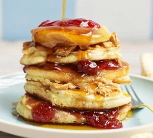

American Pancakes

Description
Easy, American-style, fluffy pancakes are great for feeding a crowd at breakfast or brunch. Top with something sweet like fruit, jam or syrup, or rashers of crispy bacon.
Ingredients
- 200g self-raising flour(Add 1 teaspoon baking powder per 100g plain flour)
- 1 1/2 baking powder
- 1 tbsp golden caster sugar
- 3 large eggs
- 25g melted butter
- 200ml milk
- vegetable oil, for cooking
Steps
- Mix 200g self-raising flourm 1 1/2 tsp baking powder, 1 tbsp golden caster sugar and a pinch of salt together in a large bowl.
- Create a well in the centre with the back of your spoon then add 3 large eggs, 25g melted butter and 200ml milk.
- Whisk together either with a balloon whisk or electric hand beaters until smooth then pour into a jug.
- Heat a small knob of butter and 1 stp of oil in a large, non-stick frying pan over a medium heat. When the butter looks frothy, pour in rounds of the batter, approximately 8cm wide. Make sure you don't put the pancakes too close together as they will spread during cooking. Cook the pancakes on one side for about 1-2 mins or until lots of tiny bubbles start to appear and pop on the surface. Flip the pancakes over and cook for a further minute on the other side. Repeat until all the batter is used up.